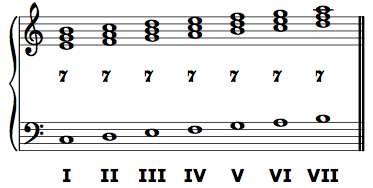
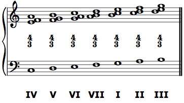

Musicianship Resources
Generating Roman numerals from a figured bass line
Both bass lines and root progressions are important for the study and mastery of tonal harmony. Most of our work will focus on the bass lines, and what follows will help you analyze the root progressions present in any figured bass line. In other words, this will help you perform a Roman numeral analysis of a figured bass line.
Note that in this class, we will always use capital Roman numerals, with no "inversion symbols" added to them. Some theorists use Roman numerals as catch all symbols that include information about the chord's root, quality, and presence of dissonant tones. We will not. Instead, the Roman numeral for us will only carry information about the root of the chord and its relationship to the tonic of the key. Like functional bass, we use Roman numerals to tell us something about harmonic syntax—the progression of harmonies in a key. Most of the time, the root is enough for us to understand how a chord functions in that progression. And like functional bass, when we do need more information, that information is always available in the thoroughbass. Since we will typically perform a thoroughbass reduction before doing a Roman numeral or functional bass analysis, there is no need to carry this extra information into the Roman numerals. They represent the root progression, not the entire collection of pitches present.
Chords of the fifth
In any chord of the fifth (5/3 or 7/5/3 chord), the bass note and the root of the chord are the same. The Roman numeral to be assigned to any chord of the fifth, then, is the scale degree of its bass note. If do is in the bass, the bass is scale-degree 1, and the Roman numeral is I. If re is in the bass, the Roman numeral is II. And so on.


"First-inversion" chords of the sixth
Chords of the sixth that take the figures 6/3 or 6/5/3 are first-inversion chords. They are so named because the third of the chord (the next chord member above the bass) is in the lowest voice. However, thinking about inversions while performing an analysis can be cumbersome. It is often simpler to remember that if the figure is 6/3 or 6/5/3 (or an abbreviation such as 6 or 6/5), the root of the chord is the sixth above the bass. If mi is in the bass, and the figure is "6", the root is do, and the Roman numeral is I. If fa is in the bass and the figure is "6/5", the root is re, and the Roman numeral is II. And so on.


"Second-inversion" chords of the sixth
Chords of the sixth that take the figures 6/4 or 6/4/3 (or an abbreviation such as 4/3) are second-inversion chords. They are so named because the fifth of the chord (the second member of the chord above the bass note) is in the lowest voice. Again, it is often simpler to remember that for 6/4, 6/4/3, and 4/3 chords, the root is the fourth above the bass. If re is in the bass, and the figure is 4/3, the root is sol, and the Roman numeral is V.


"Third-inversion" chords of the sixth
Chords of the sixth that take the figure 6/4/2 (or its abbreviation 4/2 or simply 2) are third-inversion chords. Their root is a second, or a step, above the bass. The most common 4/2 chord has fa in the bass, and sol is its root, making its Roman numeral V.